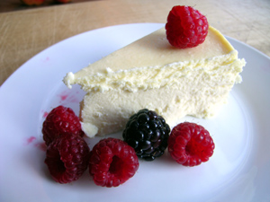
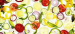

Welcome to Dieting 4 U, the website devoted to helping you get fit and healthy. Here at Dieting 4 U, we are passionate about food, but we are also aware of the benefits of a healthy lifestyle. On this site you will find recipes for delicious food, exercise suggestions and hints and tips about not only getting healthy, but staying healthy. So take a look around the site, and if you have any questions then we'd be delighted to answer them, just use the contact form found here.
As part of a healthy lifestyle you should regularly challenge yourself. How can you do this? Try these ideas.
Active Challenge: Take the stairs whenever you can today, avoiding all escalators, elevators, moving walkways, etc. all day.
Exercise Challenge: Do at least 30 minutes of cardio exercise and push yourself to go faster, higher or harder for at least one minute, 3 times during your workout.

Flexibility Challenge: Do the exercises in this Yoga Workout after your cardio workout and at least one more time during the day.
Nutrition Challenge: After one meal today, take 5-10 minutes to write in a journal recording what you ate, how much you ate and how you felt after eating (too full? satisfied? still hungry?). Now, come up with at least one idea for how you could improve that meal. For example:
»Use smaller plates or bowls to help you control your portions.
»Make your meals more balanced so you're getting more variety.
»Reduce your fat intake so you feel more energetic after eating.
»Make sure you get enough protein so you feel satisfied.
If these challenges don't work, feel free to create your own and post your experiences here. How did you challenge yourself today and did it help you be more active? Do you like having something to work for?

Register now for access to information about healthy living and exercises you could do today - start to build the lifestyle you want now.
^Top^10 top tips to get 5 A DAY on a budget.
1) Buy fruit and vegetables loose rather than pre-packaged.
2) Look for supermarket deals on fruit and vegetables, such as buy one get one free offers.
3) Fruit and vegetables are usually cheaper if they're in season.
4) Fruit and vegetables are often cheaper at your local street or farmers' market.
5) Replace your morning or afternoon snack with a piece of fruit.
6) Don't throw away vegetables that are about to go out of date. Use them in stews, soups and casseroles, which you can freeze and eat another time.

7) Stock up on canned fruit and vegetables.
8) Look for good deals on frozen and dried fruit and veg, such as frozen peas.
9) Swap ready meals for homemade alternatives.
10) Cook in bulk and freeze portions to eat another time.
^Top^
© Daniel Ingram, 2011 ~ Site Map
All content within is provided for general information only, and should not be treated as a substitute for the medical advice of your own doctor or any other health care professional. We are not responsible or liable for any diagnosis made by a user based on the content of this website. We are not liable for the contents of any external internet sites listed, nor does it endorse any commercial product or service mentioned or advised on any of the sites. See our Links Policy for more information. Always consult your own GP if you're in any way concerned about your health.